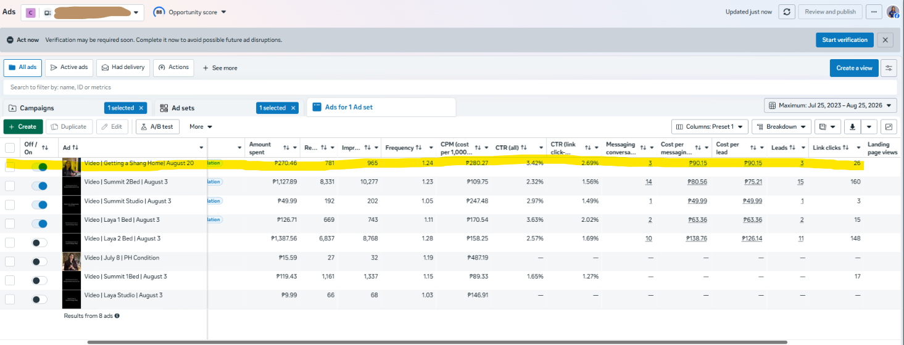
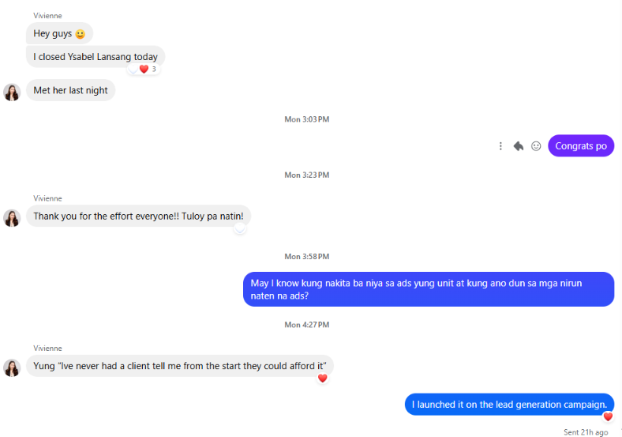
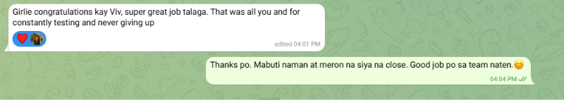

01
Shang Properties
Meta Lead Generation · Real Estate
Challenge: CPL was higher than an external benchmark being referenced, so the account needed continued creative testing—not an automatic rebuild.
What I did: Introduced fresh creatives inside the existing lead-generation campaign and monitored acquisition efficiency alongside actual lead quality.
3Leads
₱90.15CPL
2.69%Link CTR
1 confirmed closed property deal.
The client confirmed that one of the leads generated by the newly introduced “Getting a Shang Home” creative became a closed deal.
The client confirmed that one of the leads generated by the newly introduced “Getting a Shang Home” creative became a closed deal.
Ads Manager / account evidence



“That was all you and for constantly testing and never giving up.”— Agency Owner feedback